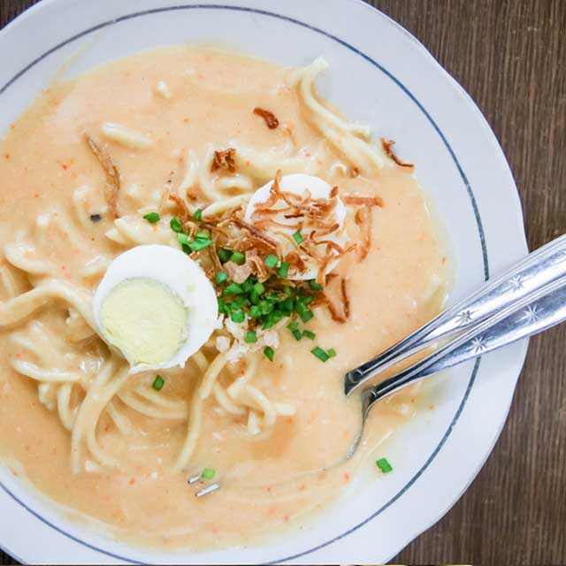

Mie Celor

Description
Mie celor is a famous Palembangan dish known for its strong savory broth. The thick, smooth, and delicious soup makes this dish even more popular. In addition to pempek, this Palembang culinary is worth a try.
At a glance, this dish looks similar to the Yogyakarta-style boiled noodles, but there are certainly differences. The addition of shrimp and dried shrimp in Palembang's mie celor makes the savory taste even more delicious. Served with bean sprouts and egg, this noodle dish is even more appetizing. For those who want to make it at home, follow the simple mie celor recipe and tips below.
Ingredients
- Wet yellow noodles - 300 grams
- Fresh shrimp - 250 grams
- Coconut milk - 250 ml
- Shrimp broth - 850 ml
- Egg, beaten - 1 piece
- Flour, dissolved in 50 ml of water - 2 tablespoons
- Salt - 1 tsp
- Granulated sugar - 1 tsp
- Ground pepper - 1/2 tsp
- Lime, squeezed - 1 piece
- Hot water - as needed
- Shallots - 6 cloves
- Garlic - 3 cloves
- Candlenuts, roasted - 2 pieces
- Dried shrimp, peeled - 1 tablespoon
- Boiled eggs - as needed
- Sliced scallions - as needed
- Fried shallots - as needed
Steps
- Steep the yellow noodles with hot water and drain. Set aside.
- Peel the shrimp and set aside the head and shell. Split the back of the shrimp and remove the black dirt. Rinse the shrimp and sprinkle with lime juice. Let stand for a few moments and set aside.
- Take the head and shell of the shrimp. Rinse thoroughly and boil with water to make the broth. Set aside.
- Take 3/4 of the shrimp and roughly chop. Leave the remaining 1/4 whole. Set aside.
- Heat the oil. Sauté the ground spices until fragrant.
- Add the chopped shrimp. Stir until it changes color.
- Pour in the broth and coconut milk. Stir constantly and cook until boiling.
- Add the whole shrimp.
- Pour in the beaten egg while stirring to create egg threads.
- Season with salt, sugar, and pepper. Mix well and adjust the taste.
- Pour in the flour solution. Stir and cook until boiling again and the broth thickens slightly. Remove from heat.
- Arrange the yellow noodles on a serving plate. Pour the broth over it and add the additional ingredients.
- Ready to serve.